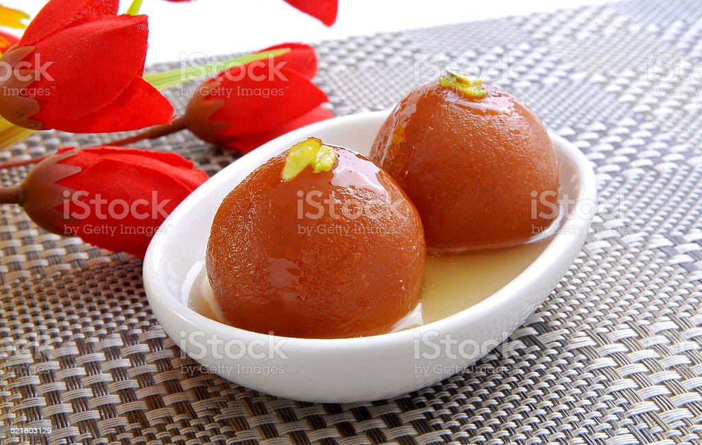
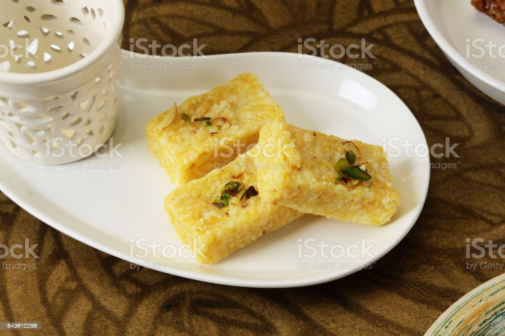

Gulam Jamun
Ingredients
- suger
- bread
- Milk
Recipe
- Start by preparing the sugar syrup. In a saucepan, add the sugar and water. Heat it over medium heat, stirring until the sugar completely dissolves. Bring it to a boil, then lower the heat and let it simmer for about 5-7 minutes. The syrup should be slightly sticky. Add a few drops of rose essence or cardamom powder for flavor and a squeeze of lemon juice to prevent crystallization. Set the syrup aside.
- In a mixing bowl, combine the milk powder, all-purpose flour, and baking soda . If you're using cardamom powder, add it at this stage.
- Add the ghee to the dry mixture and mix it well.
- Gradually add milk, a tablespoon at a time, and knead the mixture into a soft and smooth dough. The dough should not be too dry or too sticky. If it's too dry, add a little more milk, and if it's too sticky, add a bit more milk powder.

Barfi
Ingredients
- suger
- Milk
- Oil
Recipe
- Grease a square or rectangular tray or a plate with a little ghee and set it aside. This will be used to set the barfi.
- In a non-stick pan, heat the 2 tablespoons of ghee on medium-low heat.
- Once the ghee is melted, add the milk powder and cook it on low heat for about 2-3 minutes while stirring continuously. This helps to roast the milk powder slightly and remove any raw taste.
- Add the condensed milk to the pan and continue stirring. Mix well to combine the condensed milk with the milk powder.
